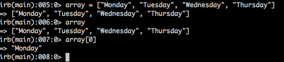
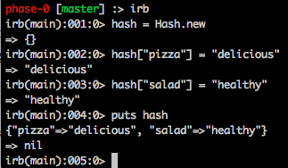

An Introduction
Arrays and hashes are known as container objects, and are 2 built in Ruby classes (a type of object in Ruby). What this means is that we can ‘contain’ objects within these structures, and they’re really useful ways to store and access data.
So what’s the difference?
Arrays are ordered collections of objects. Each object is accessible by its index, which starts at 0 for the first object, 1 for the second, and so on. If you need to access the last object, you can use the index of -1.
Check out the following array that lists days in a week. The first step is creating the array, by simply putting array = and then the objects in the array, separated by commas:
array = [“Monday”, “Tuesday”, “Wednesday”, “Thursday”]
The next step I took was to call the array, for it to list its contents. Then, by typing array[0], I was able to access the first object in the array, “Monday”, which has an index of 0.
I am going to test some of these exercises in my IRB, which stands for “Interactive Ruby.” If you’re not sure how to use this, check out this website before you get started: IRB

Here I am creating an array, viewing its contents, and accessing the first object in the array, with index 0.
Hashes are ordered collections of key/value pairs. What’s different about a hash versus an array is that rather than accessing an object by its numerical index (as we did above with an array), we access it by its unique key.
Hashes can be created as follows:
hash = { “Pizza” => “Delicious”, “Salad” => “Healthy” }
Where in the curly brackets, you list “key” => “value”
OR
hash = Hash.new
And then add the key/value pairs in the following syntax:
hash[“pizza”] = “delicious”
hash[“salad”] = “healthy”
We can see our hash with these key/value pairs if we call ‘puts hash’

To sum up, both arrays and hashes are used to store and access data. Arrays have an order to them because they're accessed by numerical indexes, while hashes can be thought of more like dictionaries, accessed by certain keys (like a definition making a word accessible to your brain in a dictionary!).